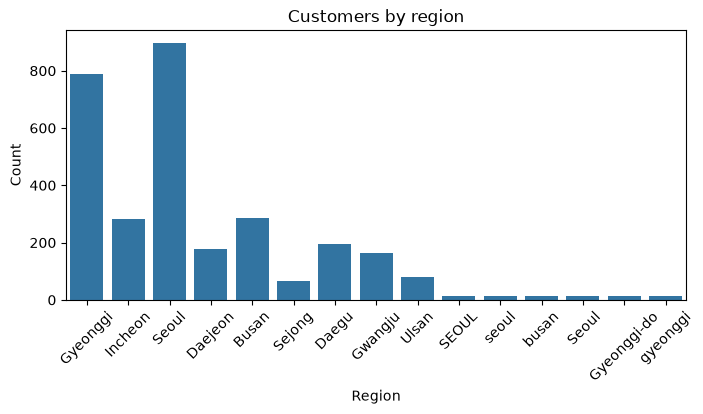
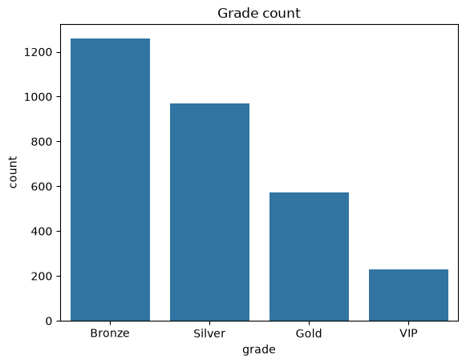
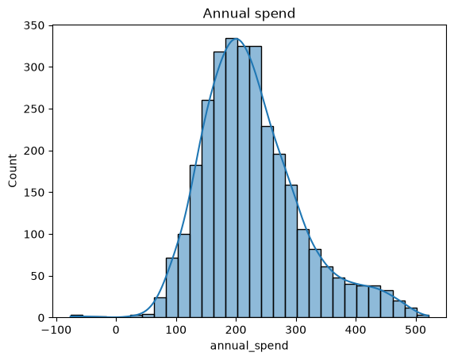
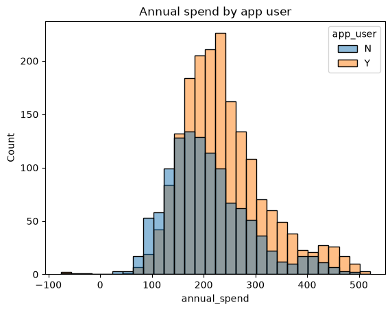
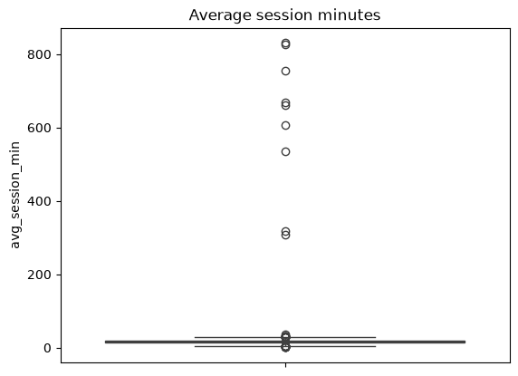
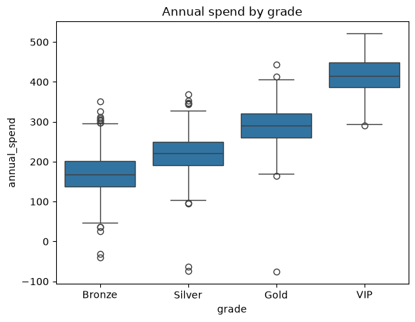
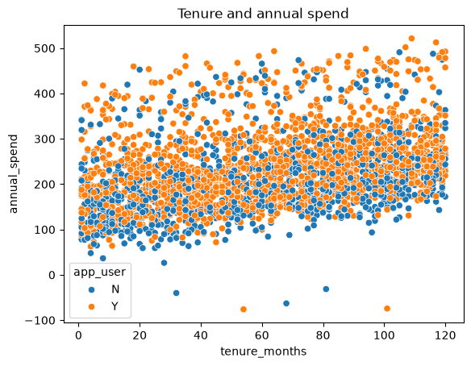
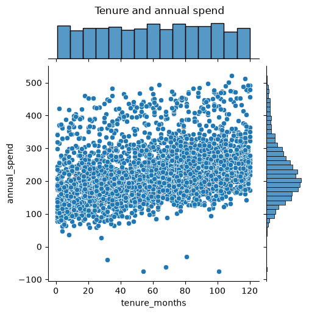
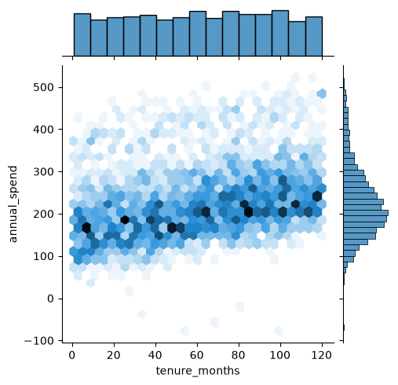
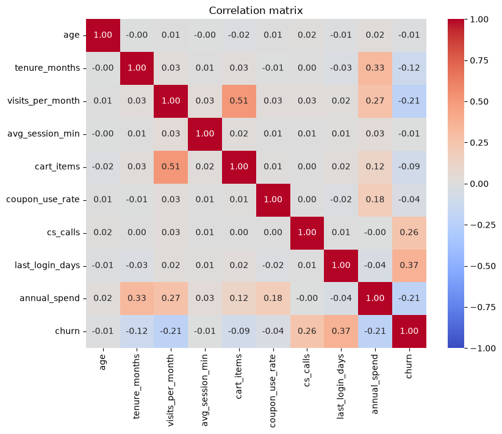

[2주차] 데이터 시각화: 분포와 관계
비즈니스빅데이터분석
2주차
데이터 시각화: 분포와 관계
2027학년도 「비즈니스빅데이터분석」의 준비 중인 교재입니다. 편집 상태를 검토하기 위해 미리 공개한 것으로, 수업 전에 내용과 순서가 바뀔 수 있습니다.
학사 3주차 · 교재 02 · 1부 데이터 분석 · 출제 분야: 데이터 분석 > 데이터 구성 및 특성 파악, AI 모델링 > 모델 성능 개선 및 그래픽 출력(그래픽 출력의 기초)
AICE Associate의 데이터 분석 문항은 표를 읽은 다음 지정된 그래프를 그리게 한다. 가이드는 그래프의 종류(빈도 그래프, 히스토그램, 상자그림, 결합 그래프 등), 대상 열, 한 그림 안의 배치, 제목을 지정한다. 이어지는 문항은 그 그래프에서 읽을 수 있는 값, 예를 들어 가장 많은 범주나 이상치가 나타나는 열, 목표 열과 상관이 가장 큰 열을 답 변수에 저장하게 한다.
본 장은 matplotlib의 그림(Figure)과 축(Axes)의 개념에서 시작하여, seaborn의 그래프 함수 일곱 가지로 범주형 변수의 분포, 수치형 변수의 분포, 두 변수의 관계, 상관 행렬을 그리는 방법을 다룬다. 그래프에서 읽은 답은 눈으로 옮겨 적지 않고 그래프를 그린 자료에서 코드로 구한다. 본 장의 상자그림에서 확인한 이상치와 히스토그램에서 확인한 불가능한 값은 3장(결측치·이상치 처리)에서 제거한다. 상관 행렬은 6장 이후에 모델의 입력을 해석하는 근거가 된다.
학습 목표
- matplotlib의 그림(Figure)과 축(Axes)을 구분하고,
subplots로 한 그림에 여러 그래프를 배치한다. - 그래프에 제목, 축 이름, 범례를 붙이고 눈금 글자를 회전한다. 한글 글꼴을 설정하는 방법을 안다.
- 범주형 변수의 분포를
countplot과barplot으로, 수치형 변수의 분포를histplot과boxplot으로 그린다. - 두 수치형 변수의 관계를
scatterplot과jointplot으로 그리고, seaborn의 축 수준 함수와 그림 수준 함수를 구분한다. - 수치형 열의 상관 행렬을 구하여
heatmap으로 그리고, 상관 계수의 부호와 크기를 해석한다. - 그래프에서 읽은 답을 그래프를 그린 자료에서 코드로 구하여 지정된 변수에 저장한다.
준비 사항
| 항목 | 내용 |
|---|---|
| 실습 노트북 | AICE_02주차_실습_학생용.ipynb |
| 자료 | customers.csv(학기 공통 자료의 원본), laptops.csv(시간 제한 문항용). 둘 다 assets/data/AICE_공통/에 있다 |
| 앞 장과의 연계 | 1장의 value_counts, groupby, idxmax. 그래프에서 읽은 답은 이 함수들로 구한다 |
| 앞 과목과의 연계 | 「빅데이터 개론」 5장(히스토그램, 상자그림), 7장(상관 계수), 「고급프로그래밍」 13장(matplotlib) |
| 실습 환경 | 접속과 설치는 부록 A를 따른다 |
1. 그림과 축, 그림의 분할
1.1 matplotlib과 seaborn
seaborn은 matplotlib을 바탕으로 만든 통계 그래프 라이브러리로, 데이터프레임과 열 이름만 주면 빈도나 평균의 계산까지 수행하여 그래프를 그린다. 그래프는 seaborn이 그리고, 그림의 크기와 배치, 제목과 축 이름은 matplotlib이 다룬다. 시험에서도 두 라이브러리를 함께 쓴다.
import pandas as pd
import matplotlib.pyplot as plt
import seaborn as sns
DATA = "../kit/data/AICE_공통/"
df = pd.read_csv(DATA + "customers.csv")
df.shape(3030, 17)1.2 그림(Figure)과 축(Axes)
matplotlib의 그래프는 두 층으로 구성된다.
| 객체 | 뜻 | 비유 |
|---|---|---|
그림(Figure) |
그래프 전체를 담는 바탕. 크기(figsize)와 전체 제목을 가진다 |
종이 한 장 |
축(Axes) |
그래프 하나가 그려지는 영역. x축과 y축, 제목, 범례를 가진다 | 종이 위의 칸 하나 |
한 그림에는 축이 하나 이상 들어간다. 이름이 혼동되기 쉬운데, Axes는 그래프 한 칸을 뜻하고, 그 안의 가로축과 세로축 하나하나는 Axis라 부른다. plt.subplots()는 그림과 축을 함께 만들어 돌려준다.
fig, ax = plt.subplots(figsize=(6, 3))
counts = df["grade"].value_counts()
ax.bar(counts.index, counts.values)
print(type(fig))
print(type(ax))
plt.show()<class 'matplotlib.figure.Figure'>
<class 'matplotlib.axes._axes.Axes'>
figsize=(6, 3)은 그림의 가로와 세로를 인치 단위로 지정한다. 지정하지 않으면 matplotlib의 기본값(6.4, 4.8)이 쓰인다. ax.bar는 그 축에 막대를 그리는 matplotlib의 메서드이다. 1장의 value_counts()가 돌려준 시리즈에서 인덱스(등급 이름)를 x에, 값(빈도)을 y에 주었다. 셀의 끝에 쓴 plt.show()는 그림을 표시한다. 생략하면 마지막 줄 그래프 함수의 반환값 설명이 함께 출력되므로 plt.show()로 끝맺는다.
1.3 두 가지 작성 방식
matplotlib에는 그래프를 그리는 방식이 두 가지 있다.
| 방식 | 코드의 모양 | 쓰는 경우 |
|---|---|---|
| pyplot 방식 | plt.figure() 뒤에 plt.title(), plt.xlabel() |
그래프가 하나인 그림 |
| 객체 방식 | fig, ax = plt.subplots() 뒤에 ax.set_title(), ax.set_xlabel() |
한 그림에 그래프가 여럿인 경우 |
pyplot 방식의 함수는 “현재 축”, 즉 가장 최근에 만들어지거나 사용된 축에 작용한다. 아래 셀은 plt.figure로 그림을 만든 뒤 seaborn에 축을 지정하지 않고 히스토그램을 그린다. seaborn은 축을 지정받지 않으면 현재 축에 그린다.
plt.figure(figsize=(6, 3))
sns.histplot(data=df, x="tenure_months")
plt.show()1.4 그림의 분할: subplots와 ax= 인자
plt.subplots(nrows, ncols)는 그림을 행과 열의 칸으로 나눈다. 반환값의 둘째는 축의 배열이다. 칸이 하나이면 축 하나가, 한 줄이면 1차원 배열이, 여러 행과 여러 열이면 2차원 배열이 돌아온다. seaborn의 그래프 함수에 ax=축을 주면 그 칸에 그린다.
fig, axes = plt.subplots(1, 2, figsize=(10, 3.5))
sns.countplot(data=df, x="grade", ax=axes[0])
sns.countplot(data=df, x="payment", ax=axes[1])
print(axes.shape)
plt.tight_layout()
plt.show()(2,)
axes.shape가 (2,)이므로 axes[0]이 왼쪽 칸, axes[1]이 오른쪽 칸이다. plt.tight_layout()은 칸 사이의 간격을 조정하여 축 이름과 제목이 겹치지 않게 한다. 2행 2열로 나누면 축의 배열이 2차원이 되어 axes[행, 열]로 칸을 지정한다.
fig, axes = plt.subplots(2, 2, figsize=(9, 6))
sns.histplot(data=df, x="tenure_months", ax=axes[0, 0])
sns.histplot(data=df, x="visits_per_month", ax=axes[0, 1])
sns.histplot(data=df, x="coupon_use_rate", ax=axes[1, 0])
sns.histplot(data=df, x="last_login_days", ax=axes[1, 1])
print(axes.shape)
plt.tight_layout()
plt.show()(2, 2)
| 실수 | 결과 |
|---|---|
ax=를 빠뜨린다 |
모든 그래프가 마지막 칸(현재 축)에 겹쳐 그려진다 |
2행 2열에서 axes[2]라고 쓴다 |
IndexError. 2차원 배열은 axes[1, 0]처럼 행과 열을 함께 쓴다 |
fig, ax = plt.subplots(1, 2)로 받고 ax.set_title()을 부른다 |
ax가 배열이므로 AttributeError. ax[0].set_title()처럼 칸을 고른다 |
1.5 축 수준 함수와 그림 수준 함수
seaborn의 함수는 그리는 대상에 따라 두 종류로 나뉜다.
| 구분 | 그리는 대상 | 반환값 | 크기 지정 | 본 장의 함수 |
|---|---|---|---|---|
| 축 수준 함수 | 주어진 축 하나(ax=) |
Axes |
그림을 먼저 만들 때 figsize |
countplot, barplot, histplot, boxplot, scatterplot, heatmap |
| 그림 수준 함수 | 새 그림 전체 | 격자 객체(JointGrid 등) |
함수의 height 인자 |
jointplot (그 밖에 displot, catplot, relplot, pairplot) |
ax = sns.countplot(data=df, x="app_user")
print(type(ax))
plt.show()<class 'matplotlib.axes._axes.Axes'>g = sns.jointplot(data=df, x="tenure_months", y="annual_spend", height=4)
print(type(g))
plt.show()<class 'seaborn.axisgrid.JointGrid'>
jointplot은 축 세 개(가운데의 산점도, 위와 오른쪽의 분포)를 가진 그림을 스스로 만든다. 따라서 subplots로 나눈 칸 하나에 넣을 수 없다. ax=를 주면 seaborn은 그 인자를 무시하고 경고만 낸 뒤 새 그림을 만든다. 가이드가 “한 그림에 두 그래프”를 요구하면 축 수준 함수를 쓰고, 결합 그래프는 따로 그린다. 그림 수준 함수의 크기는 figsize가 아니라 height(정사각형 한 변의 인치)로 정한다.
노트북 1부의 연습 1(가로 두 칸)과 연습 2(2행 2열, [선택])를 푼다.
2. 제목, 축 이름, 범례, 눈금 회전, 한글 글꼴
2.1 pyplot 함수와 축의 메서드
같은 일을 하는 함수가 두 방식에 하나씩 있다. 이름이 조금 다르므로 표로 대응시켜 둔다.
| 할 일 | pyplot 방식 | 객체 방식 |
|---|---|---|
| 제목 | plt.title("...") |
ax.set_title("...") |
| x축 이름, y축 이름 | plt.xlabel("..."), plt.ylabel("...") |
ax.set_xlabel("..."), ax.set_ylabel("...") |
| 범례 | plt.legend(title=..., loc=...) |
ax.legend(title=..., loc=...) |
| x축 눈금 글자의 회전 | plt.xticks(rotation=45) |
ax.tick_params(axis="x", rotation=45) |
| 그림 전체의 제목 | plt.suptitle("...") |
fig.suptitle("...") |
아래 셀은 pyplot 방식으로 지역별 빈도 그래프에 제목과 축 이름을 붙이고, 겹치는 눈금 글자를 45도 회전한다. seaborn은 축 이름을 열 이름(region, count)으로 자동으로 붙이는데, plt.xlabel과 plt.ylabel은 그 이름을 바꾼다.
plt.figure(figsize=(8, 3.5))
sns.countplot(data=df, x="region")
plt.title("Customers by region")
plt.xlabel("Region")
plt.ylabel("Count")
plt.xticks(rotation=45)
plt.show()
막대가 15개인 것은 1장에서 확인한 대로 같은 지역이 여러 표기로 입력되었기 때문이다. 표기의 정리는 4장에서 한다.
2.2 범례
hue=열을 주면 seaborn은 그 열의 값마다 색을 달리하여 그리고 범례를 자동으로 만든다. 범례의 제목과 위치를 바꾸려면 legend를 다시 부른다. loc에는 "upper right", "upper left", "lower right", "best" 등을 쓴다.
fig, ax = plt.subplots(figsize=(6, 3.5))
sns.countplot(data=df, x="grade", hue="churn", ax=ax)
ax.set_title("Churn by grade")
ax.set_xlabel("Grade")
ax.set_ylabel("Count")
ax.legend(title="Churn", loc="upper right")
plt.show()
범례의 0과 1은 churn 열의 값이다. 막대의 순서가 VIP, Gold, Bronze, Silver인 것은 order를 주지 않아 자료에 처음 나타난 순서를 따랐기 때문이다. 순서를 지정하는 방법은 3.1절에서 다룬다.
2.3 칸마다 제목 붙이기와 눈금 회전
한 그림에 칸이 여럿이면 제목은 칸마다 axes[i].set_title()로 붙이고, 그림 전체의 제목은 fig.suptitle()로 붙인다. 한 칸의 눈금만 회전하려면 그 칸의 tick_params를 쓴다. plt.xticks는 현재 축, 즉 마지막 칸에만 작용하므로 칸이 여럿일 때에는 의도와 다른 칸이 회전될 수 있다.
fig, axes = plt.subplots(1, 2, figsize=(10, 3.5))
sns.countplot(data=df, x="payment", ax=axes[0])
sns.countplot(data=df, x="region", ax=axes[1])
axes[0].set_title("Payment")
axes[1].set_title("Region")
axes[1].tick_params(axis="x", rotation=90)
fig.suptitle("Categorical columns")
plt.tight_layout()
plt.show()
2.4 한글 글꼴
matplotlib의 기본 글꼴에는 한글 글자가 없다. 한글 제목을 그대로 쓰면 글자가 네모(□)로 표시되고 글꼴이 없다는 경고가 출력된다. 현재의 글꼴 설정은 plt.rcParams에서 확인한다.
print(plt.rcParams["font.family"])
print(plt.rcParams["axes.unicode_minus"])['sans-serif']
TruercParams는 matplotlib의 설정값을 담은 사전이다. 한글을 쓰려면 운영 체제에 설치된 한글 글꼴의 이름을 font.family에 지정한다. 한글 글꼴을 쓰면 음수 부호(−)가 깨지는 경우가 있으므로 axes.unicode_minus를 False로 바꾸어 일반 하이픈으로 표시하게 한다.
plt.rcParams["font.family"] = "Malgun Gothic" # 윈도우(맑은 고딕). macOS는 "AppleGothic"
plt.rcParams["axes.unicode_minus"] = False # 음수 부호를 하이픈으로 표시이 설정은 커널이 다시 시작될 때까지 이후의 모든 그림에 적용된다. 글꼴의 이름은 환경마다 다르고 리눅스 서버에는 한글 글꼴이 없는 경우가 많으므로, 본 교재의 그림은 모든 글자를 영문으로 쓴다. 시험에서는 가이드가 지정한 문자열을 그대로 쓴다.
노트북 1부의 연습 3(제목, 축 이름, 눈금 회전)과 연습 4(범례)를 푼다.
3. 범주형 변수의 분포
3.1 빈도 그래프: countplot
countplot은 범주형 열의 값마다 행의 수를 세어 막대로 그린다. 1장의 value_counts()를 그래프로 그린 것과 같다. 주요 인자는 다음과 같다.
| 인자 | 뜻 | 기본값 |
|---|---|---|
data |
데이터프레임 | 없음 |
x |
막대를 가로로 늘어놓을 열의 이름(문자열) | 없음 |
order |
막대의 순서를 지정하는 리스트 | 자료에 나타난 순서 |
hue |
색으로 나눌 열의 이름 | 없음 |
order = ["Bronze", "Silver", "Gold", "VIP"]
sns.countplot(data=df, x="grade", order=order)
plt.title("Grade count")
plt.show()
등급처럼 순서가 있는 범주는 order로 순서를 지정해야 읽기 쉽다. 빈도가 많은 순서로 놓으려면 order=df["grade"].value_counts().index처럼 쓴다. “가장 많은 범주”를 묻는 답 변수는 막대의 높이를 눈으로 비교하지 않고 같은 자료에서 코드로 구한다.
counts = df["grade"].value_counts()
print(counts)
print(counts.idxmax())grade
Bronze 1259
Silver 970
Gold 573
VIP 228
Name: count, dtype: int64
Bronze3.2 막대그래프: barplot
barplot은 x의 범주마다 y 열의 값을 하나로 요약하여 막대의 높이로 그린다. 요약에 쓰는 함수가 estimator이며 기본값은 평균("mean")이다. 막대 끝의 검은 선은 오차 막대로, 기본값(errorbar=("ci", 95))은 평균의 95% 신뢰 구간이다. 신뢰 구간의 계산에는 시간이 걸린다.
sns.barplot(data=df, x="grade", y="annual_spend", order=order)
plt.title("Mean annual spend by grade")
plt.show()
| 그래프 | 막대의 높이 | y 인자 |
|---|---|---|
countplot |
x 범주의 행 수 | 쓰지 않는다 |
barplot |
x 범주에서 y 열의 요약값(기본 평균) | 수치형 열 |
0과 1로 된 열의 평균은 1의 비율이다. 따라서 y="churn"으로 막대그래프를 그리면 막대의 높이가 이탈 비율이 된다. 아래 셀은 오차 막대를 없애고(errorbar=None), 같은 값을 groupby로 구하여 비교한다.
sns.barplot(data=df, x="payment", y="churn", errorbar=None)
plt.title("Churn rate by payment")
plt.show()
df.groupby("payment")["churn"].mean().round(3)
payment
Card 0.194
Mobile 0.201
Point 0.206
Transfer 0.180
Name: churn, dtype: float64막대의 높이는 0.18~0.21로 서로 비슷하여 눈으로는 순위를 가리기 어렵다. groupby로 구한 값에서 이탈 비율이 가장 높은 결제 수단은 Point(0.206)이고 가장 낮은 결제 수단은 Transfer(0.180)이다. 그래프에서 읽는 답을 코드로 구해야 하는 까닭이다. 평균 대신 중앙값이나 합계로 요약하려면 estimator="median", estimator="sum"을 쓴다.
3.3 열 이름의 오류
seaborn의 x, y, hue에는 열 이름을 문자열로 준다. 따옴표를 빠뜨리면 파이썬은 grade를 변수의 이름으로 읽는다.
sns.countplot(data=df, x=grade)NameError: name 'grade' is not defined열 이름의 대소문자가 다르면 seaborn이 그 이름을 자료에서 찾지 못한다.
sns.countplot(data=df, x="Grade")ValueError: Could not interpret value `Grade` for `x`. An entry with this name does not appear in `data`.| 오류의 마지막 줄 | 원인 | 정정 |
|---|---|---|
NameError: name '...' is not defined |
열 이름에 따옴표가 없다 | x="grade" |
ValueError: Could not interpret value ... |
열 이름의 철자나 대소문자가 다르다 | df.columns로 이름을 확인한다 |
노트북 1부의 연습 5(빈도 순서)와 연습 6(중앙값 막대그래프)을 푼다.
4. 수치형 변수의 분포
4.1 히스토그램: histplot
히스토그램은 수치형 열의 값을 같은 폭의 구간으로 나누고 구간마다 행의 수를 막대로 그린다. 분포의 모양(한쪽으로 치우침, 봉우리의 수)과 범위를 벗어난 값을 확인하는 데 쓴다.
| 인자 | 뜻 | 기본값 |
|---|---|---|
bins |
구간의 수 | "auto"(자료에서 자동으로 정한다) |
kde |
분포를 매끄러운 곡선(커널 밀도 추정)으로 함께 그린다 | False |
hue |
색으로 나눌 열 | 없음 |
sns.histplot(data=df, x="annual_spend", bins=30, kde=True)
plt.title("Annual spend")
plt.show()
분포는 오른쪽으로 꼬리가 긴 모양이다. 왼쪽 끝의 0보다 작은 구간에 낮은 막대가 보인다. 1장의 describe()에서 최솟값이 -76.1이었던 값들이다. 구간이 너무 적으면 모양이 뭉개지고 너무 많으면 들쭉날쭉해진다. 가이드가 bins를 지정하면 그대로 쓴다.
hue를 주면 범주마다 히스토그램을 겹쳐 그린다. 아래 그래프에서 앱 사용자(Y)의 분포가 오른쪽에 있다. 1장 5.4절에서 앱 사용자의 구매액 평균이 더 높았던 것과 같다.
sns.histplot(data=df, x="annual_spend", hue="app_user", bins=30)
plt.title("Annual spend by app user")
plt.show()
4.2 상자그림: boxplot
상자그림은 분포를 다섯 개의 위치로 요약한다.
| 요소 | 뜻 |
|---|---|
| 상자의 아래 변과 위 변 | 제1사분위수(Q1, 25%)와 제3사분위수(Q3, 75%) |
| 상자 안의 선 | 중앙값(50%) |
| 사분위수 범위(IQR) | Q3 - Q1. 상자의 높이 |
| 수염 | 상자에서 위아래로 뻗은 선. Q1 - 1.5×IQR 이상, Q3 + 1.5×IQR 이하의 범위 안에서 가장 먼 자료까지 그린다 |
| 수염 밖의 점 | Q1 - 1.5×IQR보다 작거나 Q3 + 1.5×IQR보다 큰 값. 이상치 후보로 하나하나 점으로 그린다 |
1.5는 boxplot의 whis 인자의 기본값이다. whis=3으로 바꾸면 수염이 길어지고 점으로 표시되는 값이 줄어든다.
sns.boxplot(data=df, y="avg_session_min")
plt.title("Average session minutes")
plt.show()
이 상자그림에서 상자는 0 근처에 납작하게 눌려 있고 300~830분의 점 몇 개가 위쪽에 떨어져 있다. 극단적인 값이 y축의 범위를 넓혀 놓았기 때문이다. 수염의 끝이 어디인지는 사분위수로 계산할 수 있다.
s = df["avg_session_min"]
q1 = s.quantile(0.25)
q3 = s.quantile(0.75)
iqr = q3 - q1
lower = q1 - 1.5 * iqr
upper = q3 + 1.5 * iqr
print(round(q1, 2), round(q3, 2), round(iqr, 2))
print(round(lower, 2), round(upper, 2))
print((s < lower).sum(), (s > upper).sum())13.7 19.9 6.2
4.4 29.2
15 21Q1은 13.7분, Q3은 19.9분, IQR은 6.2분이다. 수염의 범위는 4.4분에서 29.2분까지이고, 그 밖의 값이 아래쪽에 15개, 위쪽에 21개 있다. 그래프에서는 비슷한 값의 점이 겹쳐 보이므로 점의 개수는 코드로 구한다.
상자그림의 점은 “이상치 후보”이다. 830분처럼 업무상 불가능한 값은 입력 오류이지만, 30분처럼 경계를 조금 넘는 값은 실제로 오래 머문 회원일 수 있다. 어느 값을 제거할지는 업무의 판단과 가이드의 지시를 따른다. 3장에서는 이 계산을 행의 제거에 쓴다.
x에 범주형 열을 주면 범주마다 상자그림을 나란히 그려 분포를 비교할 수 있다.
sns.boxplot(data=df, x="grade", y="annual_spend", order=order)
plt.title("Annual spend by grade")
plt.show()
등급이 높을수록 중앙값이 높고, 각 등급 안에서도 수염 밖의 점이 있다. 전체 자료에서는 이상치가 아닌 값도 한 등급 안에서는 이상치로 표시될 수 있다.
노트북 1부의 연습 7(범주별 히스토그램)과 연습 8(범주별 상자그림과 중앙값)을 푼다.
5. 두 변수의 관계
5.1 산점도: scatterplot
산점도는 두 수치형 열의 값을 x와 y로 하여 행마다 점 하나를 찍는다. 점들이 오른쪽 위로 향하면 양의 관계, 오른쪽 아래로 향하면 음의 관계이다. hue로 범주를 색으로 나눌 수 있다.
sns.scatterplot(data=df, x="tenure_months", y="annual_spend", hue="app_user")
plt.title("Tenure and annual spend")
plt.show()
가입 기간이 길수록 연간 구매액이 다소 커지나, 같은 가입 기간에서도 구매액의 폭이 넓다. 아래쪽의 0보다 작은 점은 4.1절에서 본 값이다.
5.2 결합 그래프: jointplot
jointplot은 가운데에 두 변수의 관계를, 위와 오른쪽에 각 변수의 분포를 함께 그린다. 그림 수준 함수이므로 크기는 height로 정하고, 그림 전체의 제목은 반환값의 figure 속성에 suptitle로 붙인다. y=1.02는 제목이 위쪽 히스토그램과 겹치지 않게 한다.
g = sns.jointplot(data=df, x="tenure_months", y="annual_spend", height=5)
g.figure.suptitle("Tenure and annual spend", y=1.02)
plt.show()
kind 인자는 가운데 그래프의 종류를 정한다.
kind |
가운데 그래프 |
|---|---|
"scatter" (기본값) |
산점도 |
"hist" |
2차원 히스토그램 |
"hex" |
육각형 칸의 2차원 히스토그램. 점이 많아 겹칠 때 밀도를 보기 좋다 |
"kde" |
밀도의 등고선 |
"reg" |
산점도와 회귀선 |
g = sns.jointplot(data=df, x="tenure_months", y="annual_spend", kind="hex", height=5)
plt.show()
5.3 두 열의 상관 계수
그래프에서 본 관계의 세기는 상관 계수로 수치화한다. 두 시리즈의 상관 계수는 시리즈1.corr(시리즈2)로 구한다.
r = df["tenure_months"].corr(df["annual_spend"])
print(round(r, 3))0.326가입 기간과 연간 구매액의 상관 계수는 0.326이다. 산점도에서 본 “다소 커지는 경향”이 약한 양의 상관으로 나타난 것이다. 상관 계수의 해석은 6절에서 정리한다.
노트북 1부의 연습 9(색을 나눈 산점도)와 연습 10(결합 그래프, [선택])을 푼다.
6. 상관 행렬과 히트맵
6.1 상관 행렬: corr(numeric_only=True)
데이터프레임의 corr()는 모든 열의 쌍에 대하여 상관 계수를 구한 표(상관 행렬)를 돌려준다. 그런데 문자열 열이 섞인 데이터프레임에 그대로 쓰면 오류가 난다.
df.corr()ValueError: could not convert string to float: 'C02493'pandas 2.0부터 numeric_only의 기본값이 False로 바뀌어, 문자열 열(customer_id)의 값을 수로 바꾸려다 실패한 것이다. 이전 판의 자료나 블로그의 코드에는 df.corr()만 쓴 것이 많으므로, 시험에서 이 오류를 만나면 numeric_only=True를 넣는다.
corr = df.corr(numeric_only=True)
corr.round(2) age tenure_months visits_per_month avg_session_min cart_items coupon_use_rate \
age 1.00 -0.00 0.01 -0.00 -0.02 0.01
tenure_months -0.00 1.00 0.03 0.01 0.03 -0.01
visits_per_month 0.01 0.03 1.00 0.03 0.51 0.03
avg_session_min -0.00 0.01 0.03 1.00 0.02 0.01
cart_items -0.02 0.03 0.51 0.02 1.00 0.01
coupon_use_rate 0.01 -0.01 0.03 0.01 0.01 1.00
cs_calls 0.02 0.00 0.03 0.01 0.00 0.00
last_login_days -0.01 -0.03 0.02 0.01 0.02 -0.02
annual_spend 0.02 0.33 0.27 0.03 0.12 0.18
churn -0.01 -0.12 -0.21 -0.01 -0.09 -0.04
cs_calls last_login_days annual_spend churn
age 0.02 -0.01 0.02 -0.01
tenure_months 0.00 -0.03 0.33 -0.12
visits_per_month 0.03 0.02 0.27 -0.21
avg_session_min 0.01 0.01 0.03 -0.01
cart_items 0.00 0.02 0.12 -0.09
coupon_use_rate 0.00 -0.02 0.18 -0.04
cs_calls 1.00 0.01 -0.00 0.26
last_login_days 0.01 1.00 -0.04 0.37
annual_spend -0.00 -0.04 1.00 -0.21
churn 0.26 0.37 -0.21 1.00 상관 행렬은 대각선(자기 자신과의 상관, 1.00)을 기준으로 대칭이다. 0과 1로 된 churn도 수치형 열이므로 포함된다.
6.2 히트맵: heatmap
히트맵은 표의 값을 색의 진하기로 나타낸다. 상관 행렬처럼 열이 많은 표의 큰 값과 작은 값을 한눈에 찾는 데 쓴다.
| 인자 | 뜻 | 기본값 |
|---|---|---|
annot |
칸마다 값을 글자로 적는다 | 적지 않는다 |
fmt |
annot의 숫자 형식. ".2f"는 소수 둘째 자리 |
".2g"(유효 숫자 두 자리) |
cmap |
색의 배열. "coolwarm"은 음수를 파랑, 양수를 빨강으로 |
seaborn이 정한다 |
vmin, vmax |
색의 양 끝에 대응하는 값 | 자료의 최솟값과 최댓값 |
plt.figure(figsize=(9, 7))
sns.heatmap(corr, annot=True, fmt=".2f", cmap="coolwarm", vmin=-1, vmax=1)
plt.title("Correlation matrix")
plt.show()
상관 계수는 -1에서 1 사이이므로 vmin=-1, vmax=1을 주어야 색이 0을 가운데로 대칭이 된다. fmt의 기본값 ".2g"는 유효 숫자 두 자리여서 대각선이 1로 표시되는 등 자릿수가 들쑥날쑥하므로, 소수 자리를 맞추려면 fmt=".2f"를 쓴다.
6.3 상관 계수의 해석
상관 계수(피어슨 상관 계수)는 두 변수의 직선 관계의 방향과 세기를 나타낸다.
| 읽을 것 | 뜻 |
|---|---|
| 부호 | 양수이면 한쪽이 클 때 다른 쪽도 크고, 음수이면 한쪽이 클 때 다른 쪽은 작다 |
| 절댓값 | 1에 가까울수록 직선 관계가 강하다. 0에 가까우면 직선 관계가 거의 없다 |
| 크기의 기준 | 통상 절댓값 0.1~0.3을 약한, 0.3~0.7을 중간의, 0.7 이상을 강한 상관으로 읽는다. 분야마다 기준이 다르다 |
해석할 때 주의할 점은 세 가지이다. 첫째, 상관은 인과가 아니다. 마지막 접속 이후 경과 일수가 이탈과 상관이 있다고 하여 접속하지 않은 것이 이탈의 원인이라고 단정할 수 없다. 둘째, 상관 계수는 직선 관계만 잰다. 곡선 관계가 강하여도 상관 계수는 작을 수 있으므로 산점도를 함께 본다. 셋째, 극단적인 이상치는 상관 계수를 크게 바꾼다. 3장에서 이상치를 제거한 뒤에는 상관 계수도 달라진다.
목표 열과의 상관을 묻는 문항은 상관 행렬에서 목표 열의 열(또는 행) 하나를 꺼내, 자기 자신을 빼고, 가장 큰 값의 위치를 구한다. “관계가 가장 강한 열”을 묻는 경우에는 음의 상관도 강한 관계이므로 절댓값(abs())을 쓴다. 아래 셀은 이탈 여부(churn)와 상관이 가장 강한 열을 구한다.
churn_corr = corr["churn"].drop("churn")
print(churn_corr.abs().sort_values(ascending=False).round(3))
print(churn_corr.abs().idxmax())last_login_days 0.369
cs_calls 0.255
visits_per_month 0.212
annual_spend 0.211
tenure_months 0.124
cart_items 0.090
coupon_use_rate 0.039
age 0.008
avg_session_min 0.007
Name: churn, dtype: float64
last_login_days이탈과 관계가 가장 강한 열은 last_login_days(0.369)이고, 다음은 cs_calls(0.255)이다. 히트맵에서 churn의 행을 따라가며 가장 진한 칸을 찾은 것과 같은 결과이다. 문항이 “상관 계수가 가장 큰”이라고 하였는지 “절댓값이 가장 큰”이라고 하였는지에 따라 abs()의 사용 여부가 달라지므로 가이드의 표현을 확인한다.
노트북 1부의 연습 11(일부 열의 히트맵)을 푼다.
7. 중심 실습: 그래프 6종과 답 변수 6개
노트북 AICE_02주차_실습_학생용.ipynb의 2부에서 수행한다. 학기 공통 자료의 원본으로 가이드가 지정한 그래프를 그리고, 그래프에서 읽은 답을 코드로 구하여 답 변수에 저장한다.
준비. 단계 1의 셀을 실행하여 라이브러리를 불러오고 자료를 df에 읽는다.
절차.
| 단계 | 그래프 | 할 일 | 답을 담을 변수 |
|---|---|---|---|
| 1 | 라이브러리 불러오기와 자료 읽기 | df |
|
| 2 | 1, 2 | 한 그림에 등급의 빈도 그래프(제목 Grade count)와 결제 수단별 이탈 비율의 막대그래프(제목 Churn rate by payment) |
fig1, axes1, ans1, ans2 |
| 3 | 3 | 연간 구매액의 히스토그램(구간 40개, 제목 Annual spend) |
ax3, ans3 |
| 4 | 4 | 세 열(age, tenure_months, avg_session_min)의 상자그림을 가로 세 칸에 |
fig4, axes4, ans4 |
| 5 | 5, 6 | visits_per_month와 cart_items의 결합 그래프, 수치형 열의 상관 행렬 히트맵(제목 Correlation matrix) |
g5, ax6, ans5, ans6 |
| 6 | 자가 채점 셀의 실행 | (출력 통과) |
|
| 7 | 값의 해석 두 문장 | (주석) |
세부 설정은 노트북의 단계별 가이드에 있다. 축을 지정된 변수에 저장하는 것은 자가 채점 셀이 제목과 축 이름을 검사하기 때문이다.
물음.
| 변수 | 물음 |
|---|---|
ans1 |
빈도가 가장 높은 등급의 이름 |
ans2 |
이탈 비율이 가장 높은 결제 수단의 이름 |
ans3 |
연간 구매액이 0 이하인 행의 수 |
ans4 |
세 열 가운데 상자그림에 이상치 점이 나타나는 열의 이름의 리스트 |
ans5 |
visits_per_month와 cart_items의 상관 계수(소수 둘째 자리) |
ans6 |
annual_spend와 상관 계수가 가장 큰 열(자기 자신 제외)의 이름 |
ans4는 세 열의 사분위수를 한 번에 구하여 판정한다. df[cols].quantile(0.25)는 열마다 Q1을 담은 시리즈를 돌려주고, 데이터프레임과 시리즈를 비교하면 열 이름을 기준으로 맞추어 계산된다. 상자그림의 점을 눈으로 세지 않는다.
완료 기준. 자가 채점 셀이 통과를 출력한다. 자가 채점 셀은 그래프 1~6의 칸 수, 제목, 축 이름과 ans1~ans6의 값을 검사한다.
값의 해석. 단계 7에서 다음 두 물음에 한 문장씩 답한다.
- 그래프 4에서
avg_session_min의 상자가 납작하게 보이는 까닭은 무엇인가. ans6의 열과annual_spend의 상관 계수는 얼마이며, 그 크기를 어떻게 해석하는가.
제출물. 실행을 마친 노트북 파일. 그래프 6종, 자가 채점 셀의 통과, 단계 7의 두 문장이 있어야 한다.
8. 시간 제한 문항
제한 시간은 15분이다. 노트북의 3부에서 푼다.
가상의 중고 노트북 거래 자료 laptops.csv를 사용한다. 공식 문서 사이트만 참고한다. 각 문항의 답은 한 셀에 작성한다. 아래 셀을 먼저 실행한다.
| 열 | 뜻 |
|---|---|
listing_id |
거래 번호 |
brand, cpu |
제조사, 처리 장치 |
ram_gb, ssd_gb, screen_inch |
메모리(GB), 저장 장치(GB), 화면 크기(인치) |
age_months, battery_health |
사용 기간(개월), 배터리 성능(%) |
condition |
외관 등급(A, B, C) |
price, sell_speed |
거래 가격(만 원), 판매 속도(fast, normal, slow) |
import pandas as pd
import matplotlib.pyplot as plt
import seaborn as sns
DATA = "../kit/data/AICE_공통/"
lap = pd.read_csv(DATA + "laptops.csv")
print(lap.shape)문항 1 (빈칸 채우기)
가로로 두 칸인 그림을 만들어 왼쪽 칸에 제조사(brand)의 빈도 그래프를, 오른쪽 칸에 외관 등급(condition)별 가격(price)의 상자그림을 그린다. 왼쪽 칸의 제목은 Brand count, 오른쪽 칸의 제목은 Price by condition이다. 빈칸 ___을 채운다.
fig, axes = plt.___(1, 2, figsize=(10, 4))
sns.countplot(data=lap, x="brand", ___=axes[0])
sns.boxplot(data=lap, x="condition", y="price", order=["A", "B", "C"], ax=axes[1])
axes[0].___("Brand count")
axes[1].set_title("Price by condition")
plt.tight_layout()
plt.show()문항 2 (오류 정정)
아래 코드는 메모리(ram_gb)를 x축, 가격(price)을 y축으로 하는 산점도를 그리고 제목 Price by RAM을 붙이려 한다. 실행하면 오류가 난다. 오류를 모두 정정하여 실행한다.
sns.scatterplot(data=lap, x=ram_gb, y="Price")
plt.title("Price by RAM")
plt.show()문항 3 (답 변수)
수치형 열의 상관 행렬을 히트맵으로 그린다(값 표시, 소수 둘째 자리). 가격(price)과 상관 계수의 절댓값이 가장 큰 열(자기 자신 제외)의 이름을 ans_t3에 저장한다.
# 여기에 코드를 작성한다9. 정리
| 주제 | 기억할 것 |
|---|---|
| 그림과 축 | Figure는 종이, Axes는 칸. fig, axes = plt.subplots(행, 열, figsize=(가로, 세로)) |
| 칸 지정 | 축 수준 함수에 ax=axes[i](2차원이면 axes[행, 열]) |
| 그림 수준 함수 | jointplot은 새 그림을 만든다. 크기는 height, 제목은 g.figure.suptitle() |
| 제목과 축 | plt.title·plt.xlabel(현재 축) 또는 ax.set_title·ax.set_xlabel(지정한 칸). 회전은 plt.xticks(rotation=), ax.tick_params(axis="x", rotation=) |
| 한글 글꼴 | plt.rcParams["font.family"], plt.rcParams["axes.unicode_minus"] = False |
| 범주형 분포 | countplot(행 수, order, hue), barplot(y의 요약, estimator, errorbar=None) |
| 수치형 분포 | histplot(bins, kde), boxplot(수염은 1.5×IQR, 밖의 점은 이상치 후보) |
| 관계 | scatterplot(hue), jointplot(kind), 시리즈.corr(시리즈) |
| 상관 행렬 | df.corr(numeric_only=True), heatmap(annot=True, fmt=".2f", vmin=-1, vmax=1), 목표 열에서 자기 자신을 빼고 idxmax() |
| 답 변수 | 그래프에서 읽은 값도 그래프를 그린 자료에서 코드로 구한다 |
다음 장에서는 본 장의 상자그림과 히스토그램에서 확인한 불가능한 값과 이상치를 제거하고, 결측치를 처리하여 정제본을 작성한다.
참고 자료
확인일은 2026-11-13이다. 표시한 항목은 2026-11-14에 확인하였다.
- Matplotlib, Quick start guide. https://matplotlib.org/stable/users/explain/quick_start.html
- Matplotlib,
matplotlib.pyplot.subplots. https://matplotlib.org/stable/api/_as_gen/matplotlib.pyplot.subplots.html - Matplotlib,
matplotlib.pyplot.figure. https://matplotlib.org/stable/api/_as_gen/matplotlib.pyplot.figure.html - Matplotlib,
matplotlib.pyplot.xticks. https://matplotlib.org/stable/api/_as_gen/matplotlib.pyplot.xticks.html - Matplotlib,
matplotlib.pyplot.legend. https://matplotlib.org/stable/api/_as_gen/matplotlib.pyplot.legend.html - Matplotlib, Customizing Matplotlib with style sheets and rcParams. https://matplotlib.org/stable/users/explain/customizing.html
- Matplotlib,
matplotlib.axes.Axes.tick_params(2026-11-14 확인). https://matplotlib.org/stable/api/_as_gen/matplotlib.axes.Axes.tick_params.html - Matplotlib,
matplotlib.figure.Figure.suptitle(2026-11-14 확인). https://matplotlib.org/stable/api/_as_gen/matplotlib.figure.Figure.suptitle.html - Matplotlib,
matplotlib.pyplot.tight_layout(2026-11-14 확인). https://matplotlib.org/stable/api/_as_gen/matplotlib.pyplot.tight_layout.html - seaborn, Overview of seaborn plotting functions. https://seaborn.pydata.org/tutorial/function_overview.html
- seaborn, Visualizing categorical data. https://seaborn.pydata.org/tutorial/categorical.html
- seaborn,
seaborn.countplot. https://seaborn.pydata.org/generated/seaborn.countplot.html - seaborn,
seaborn.barplot. https://seaborn.pydata.org/generated/seaborn.barplot.html - seaborn,
seaborn.histplot. https://seaborn.pydata.org/generated/seaborn.histplot.html - seaborn,
seaborn.boxplot. https://seaborn.pydata.org/generated/seaborn.boxplot.html - seaborn,
seaborn.scatterplot. https://seaborn.pydata.org/generated/seaborn.scatterplot.html - seaborn,
seaborn.jointplot. https://seaborn.pydata.org/generated/seaborn.jointplot.html - seaborn,
seaborn.heatmap. https://seaborn.pydata.org/generated/seaborn.heatmap.html - pandas,
DataFrame.corr. https://pandas.pydata.org/docs/reference/api/pandas.DataFrame.corr.html - pandas,
DataFrame.quantile. https://pandas.pydata.org/docs/reference/api/pandas.DataFrame.quantile.html